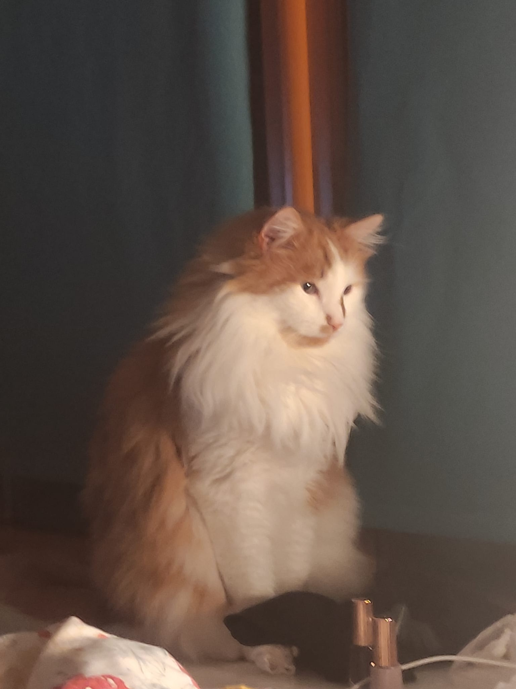

Archie The Philosopher

It has come to my attention that I have grown significantly wiser. I believe this is due to my winter coat.
As you can see, it has reached an exceptional level of fluffiness. It's so extraordinaryily fluffy that I feel quite majestic and almost scholarly.
This prompted me to start thinking. I have my usual thoughts about food and birds but also about life and its purpose. About why the humans insist on smushing their face against mine when I know they can see me just fine from afar. About the deeper meaning behind the red dot that appears and disappears without explanation.
I like to stare off into the distance while considering the philosophical complexities of life, though my humans probably assume I am staring at nothing. Some unanswered questions consist of:
- If I push an object off the edge of a surface, will it fall every time?
- If the food bowl is half full, why does it feel completely empty?
- If I sit on the keyboard for long enough, will I eventually recreate the works of Shakespeare?
Being this wise is tiring. After deep thinking I usually require a nap. Ideally somewhere warm, soft, and inconvenient for everyone else.
The moral of the story here is that I am no longer just Archie.
I am now Archie the Philosopher.